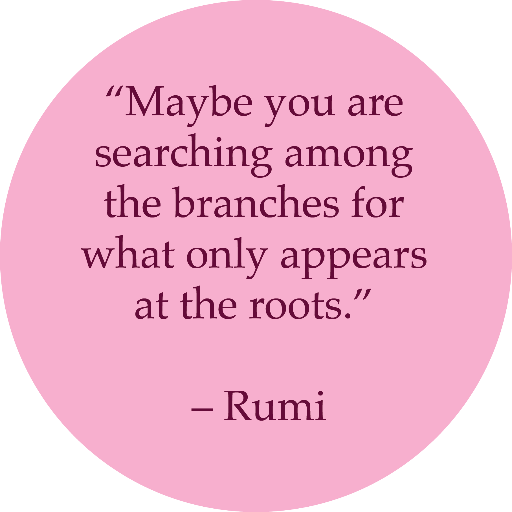
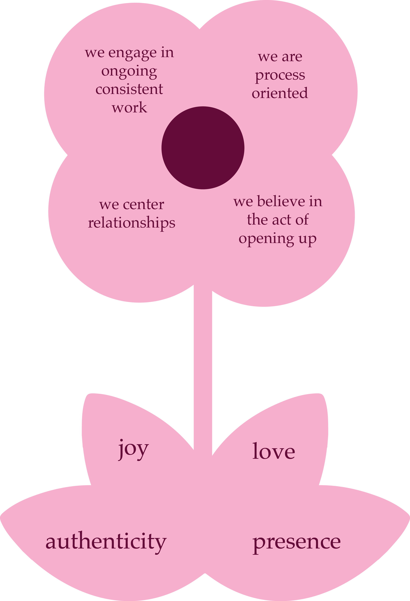

our methodology springs from the perspective of an urban farm. for nature, diversity is essential to survive and thrive. each plant requires particular conditions to grow successfully. by examining the mechanism of plant growth, we can adopt practices that enable our working environment to flourish. through our learnings from the farm, we bring in teachings to emulate prosperous models of growth. our hope is to address gender issues through the wisdom of nature. we hope to optimize working conditions by shifting culture in the workspace to be more inclusive and supportive.
we believe that culture is at the heart of product. if the culture is harmful, then our whole business suffers. often, we don’t see the direct link between culture and product - yet it is there subtly but powerfully.
similarly, we often can’t recognize gender discrimination in the workplace. yet again, it is there subtle and powerful. gender inequality is deeply rooted in our societal culture - we are all affected by its presence. to truly bloom as businesses, we must confront gender discrimination in the workplace.
our theory of change involves engaging with the roots: how it is that we got to this moment in history and how we understand ourselves and others through the lens of gender. the work happens through multitude angles: personal reflection, group dynamics, and theory. we provide the strategy plan and the facilitation to guide you in this process.
we know this work is hard. we harvested wisdom to support us along the way.
we engage in ongoing consistent work
because the nature of this work is deeply rooted, it often means it is hidden from the surface. there are no one time solutions for gender discrimination. rather, we must be doing the work consistently.
we center relationships
we know about ourselves through the ways we relate to others. relationships are at the core. dialogue and understanding the other is at the heart of the work.
we believe in the act of opening up
when engaging in this work, openness is essential. the more we open up, the closer we get to understanding.
we are process oriented
we believe the process is the solution. this can be challenging if we desire quick results. only through process will we begin to uncover the hidden layers of our culture.
our guiding principles are joy, authenticity, presence and love.
joy enables us to access life’s energy - the parts within us that desires to grow.
authenticity connects us to our own truth by being in deep relationship with ourselves.
presence gives us awareness of the now through our existence in our surroundings. and
love, the mysterious force of healing that gives us permission to transform.
learn about our partnerships here